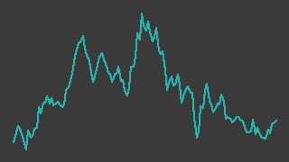

ダイヘン（6622）
東証プライム／レポート更新 2026-09-04
未検証本文の記述はまだ出典に当て直していない
IR情報 ↗決算短信・決算説明資料 ↗IR BANK ↗株探 ↗

画像判定※・6か月・基準日 2026-09-03一行でいうと：受変電機器・蓄電池システム（エネルギーマネジメント）、溶接ロボット（FA）、半導体製造装置向けの高周波電源（マテリアルプロセシング）の3本柱を持つ電機メーカー。受注残高が前期比 +30.7% と売上の伸び（+5.0%）の6倍の速さで積み上がっており、自ら大形変圧器の生産能力を2倍にする投資を進めながらなお増えている。ただし受注残の伸びは半導体向けが牽引しており、データセンター単独の話ではない。台帳の機械判定は「見送（トレンド）」。
週次アップデート最新 2026-W36・全 2 件
新しい週を上に置いている。過去の記述は書き換えず、そのまま残している。
2026-W36（続報）
反落。個別材料は見当たらない
- 株価: 週間 -6.0%（12980→12200円・採用終値ベース、照合成立 4日、週内 12200〜12870円）
- 出来高: 前週比 -13.3%（今週 654,600株／前週 755,300株）※／信用倍率: 59.67倍（買残 196.9千株・売残 3.3千株、08/28時点）※
- 判定: 「見送(トレンド)」／開示: なし
（解釈）今週の個別材料記事は確認できていない
次週に見ること: ① 反落の継続・反発の有無を来週確認する
2026-W36（2026-09-01 週）
セグメント分析（DC の電力・冷却）から台帳に登録した初回。受注は加速しているが、株価は高値から3割下にある。
- 台帳に登録し、株価・財務・信用残・決算短信を取得した。日足は269営業日ぶんで、うち2ソース照合が成立した採用値は243件
- 2026年3月期は受注残高 142,946百万円（前期比 +30.7%）に対し売上高 237,735百万円（+5.0%）。受注残が売上の6倍の速さで積み上がっている（会社の決算短信・一次情報）。セグメント別では半導体向け（マテリアルプロセシング）が +88.7%、受変電を含むエネルギーマネジメントが +20.6%
- 2027年3月期第1四半期も受注高 86,096百万円（前年同期比 +46.5%）と加速。営業利益は 4,079百万円✓で前年同期 3,163百万円✓から +29.0%（会社の決算短信・一次情報／営業利益は台帳の採用値とも一致）
- 会社計画は売上高 280,000百万円✓（+17.8%）・営業利益 25,000百万円✓（+33.1%）。会社自身が3割超の増益を見込んでいる
- 台帳の機械判定は「見送（トレンド）」。週足の中期移動平均が下向き（13週 -1.538%/週・26週 -0.243%/週）で、鉄則の第一条により買いで入らない段階
- 株価は 12,870円✓（2026-08-31）で52週高値 19,450円✓の 66.2%。利益と受注が伸びている一方で株価は高値から3割下という食い違いがあり、この理由は特定できていない
次週に見ること：①週足中期移動平均が上向きに転じるか ②半導体向けの受注が続くか（次の四半期開示は11月ごろ）
次期売上・利益推定対象 FY2027-03・作成済み・変数 7 個
作成済み 対象期 FY2027-03・起案 2026-09-05。検証済みデータと明示した仮定から機械計算した概算であり、会社計画でも的中予想でもない。推定 の付いた変数を疑うための頁。
会社計画・市場予想・実績との比較（百万円）
| 指標 | 前期実績 | 会社計画 | 市場予想 | 当台帳推定 | 市場予想比 |
|---|---|---|---|---|---|
| 売上 | 237,735 | 280,000 | 285,770 | 280,728 | -1.8% |
| 営業利益 | 18,778 | 25,000 | — | 23,862 | — |
市場予想の出所: みんかぶ 証券アナリスト予想（4人: 強気買い1・買い2・中立1） 出典 ↗
計算の分解
| セグメント | 式（値を代入） | 売上（百万円） |
|---|---|---|
| エネルギーマネジメント（受変電機器・蓄電池・EV充電） | 128,220 × 1.15 = 147,453 | 147,453 |
| マテリアルプロセシング（半導体製造装置向け電源・溶接電源） | 76,426 × 1.3 = 99,353.8 | 99,354 |
| ファクトリーオートメーション（溶接・搬送ロボット） | 32,933 × 1.03 = 33,920.99 | 33,921 |
変数と根拠
カードを押すと、その値の置き方（メモ・出典）が開く。推定 の変数から疑うこと。
エネルギーマネジメント（受変電機器・蓄電池・EV充電）prev_revenue128220開示（一次）
エネルギーマネジメント（受変電機器・蓄電池・EV充電）growth1.15推定
マテリアルプロセシング（半導体製造装置向け電源・溶接電源）prev_revenue76426開示（一次）
マテリアルプロセシング（半導体製造装置向け電源・溶接電源）growth1.3推定
ファクトリーオートメーション（溶接・搬送ロボット）prev_revenue32933開示（一次）
ファクトリーオートメーション（溶接・搬送ロボット）growth1.03推定
全社op_margin0.085推定
感度 — この推定を最も動かす変数
各変数を +10% したときの営業利益の変化。上にある変数ほど、根拠を厚く確かめる価値がある。ただし op_margin だけは別扱い——営業利益 = 売上合計 × op_margin なので +10% は定義上つねに +10% になり、売上側の変数と大小を比べても意味が無い。
| 変数 | セグメント | 営業利益への影響 |
|---|---|---|
op_margin | 全社 定義上 | +10.0% 乗法モデルなので定義上つねに +10%。売上側の変数との大小比較には意味が無い（率の水準そのものを疑うこと） |
growth | エネルギーマネジメント（受変電機器・蓄電池・EV充電） | +5.3% |
prev_revenue | エネルギーマネジメント（受変電機器・蓄電池・EV充電） | +5.3% |
growth | マテリアルプロセシング（半導体製造装置向け電源・溶接電源） | +3.5% |
prev_revenue | マテリアルプロセシング（半導体製造装置向け電源・溶接電源） | +3.5% |
growth | ファクトリーオートメーション（溶接・搬送ロボット） | +1.2% |
推定の変遷
過去の版は書き換えずに残す。数値感がどう変わってきたかが学習の履歴になる。
| 起案日 | 対象期 | 売上 | 営業利益 | 何を変えたか |
|---|---|---|---|---|
| 2026-09-05 | FY2027-03 | 280,728 | 23,862 | 初版（Claude 起案・人間未確認）。会社が開示する3セグメント（エネルギーマネジメント・マテリアルプロセシング・ファクトリーオートメーション） それぞれを前期売上×伸びで置く。伸びの根拠は受注残高（この会社は受注残を開示している）。会社計画は売上高 280,000・営業利益 25,000 百万円 （fundamentals の採用値。前期比 +17.8%・+33.1%）。推定売上は計画とほぼ同じ、営業利益は計画をやや下回る（計画の利益率 8.9% に 対し当推定 8.5%）。セグメント売上の合計（237,579）と連結売上（237,735）の差 156 は調整額で、無視できる大きさなので置かない |
会社概要この会社は何者か・財務の推移と健全性・今後の展望とリスク・値動きと市場の評価・出典・検証の記録
この会社は何者か
1919年創業の電機メーカー。事業は3本柱に分かれる。
| セグメント | 中身 | FY2026-03 売上 | 営業利益 |
|---|---|---|---|
| エネルギーマネジメント | 受変電機器（変圧器・開閉装置）、蓄電池システム、EV充電器 | 128,220 | 14,165 |
| マテリアルプロセシング | 半導体製造装置向けの高周波電源、溶接電源 | 76,426 | 7,422 |
| ファクトリーオートメーション | 溶接ロボット、搬送ロボット | 32,933 | 1,971 |
単位は百万円。会社の決算短信（一次情報）のセグメント別表による。
利益の柱はエネルギーマネジメントで、営業利益の6割弱を稼ぐ。ここに受変電機器が入っており、データセンター・半導体工場の建設増加が効く部分にあたる。次いで半導体製造装置向けの電源が続く。
商売の形は受注生産（ 定性図（数値を含まない）
供給側の制約は工場の生産能力である。大形変圧器は巻線・鉄心の熟練工と専用設備を要し、部材（電磁鋼板など）にも上限がある。ただし人の資格と違い、設備投資で2〜3年あれば増やせる。実際この会社は2025年12月に、大形変圧器の生産能力を2026年度1.2倍→2027年度1.5倍→2029年度2.0倍にする100億円規模の投資を発表している（会社のプレスリリース・一次情報）。
この投資は二面性を持つ。「需要が続く」と供給側が判断した証拠であると同時に、数年後に品薄が緩む予告でもある。詳しくは台帳の前提知識ページ「データセンターの電力と冷却」を参照。
財務の推移と健全性
台帳の採用値（2ソース照合済み）で追う。
| 期 | 売上高 | 営業利益 | 経常利益 | 純利益 | 自己資本比率 |
|---|---|---|---|---|---|
| FY2022-03 | 160,618 | — | — | — | — |
| FY2023-03 | 185,288 | 16,568 | 17,660 | 13,193 | — |
| FY2024-03 | 188,571 | 15,145 | 16,082 | 16,494 | 48.4 |
| FY2025-03 | 226,375 | 16,174 | 17,182 | 11,961 | 47.7 |
| FY2026-03 | 237,735 | 18,778 | 20,100 | 14,108 | 48.1 |
単位は売上・利益が百万円、自己資本比率が%。
読みどころは3つ。
利益の伸びは明電舎ほど急ではない。 営業利益は FY2023-03 の 16,568 から FY2026-03 の 18,778 で +13.3%。FY2024-03 に一度落ち込んでいる（
図「fy_op」を描けなかった — 検証済みの数値が1件も無い（2023/3（単位を換算できない（JPY_million → ））／2024/3（単位を換算できない（JPY_million → ））／2025/3（単位を換算できない（JPY_million → ）））
）。営業利益率は 7.14%✓ → 7.90%✓ と改善しているが、水準としては電気設備工事の会社（11〜12%✓）より低い。財務は安定している。 自己資本比率は48%前後で3期ほぼ横ばい。急に厚くも薄くもなっていない。
キャッシュフローの振れが大きい。 フリーCFは FY2024-03 が -19,557百万円✓、FY2025-03 が +14,409百万円✓、FY2026-03 が -5,898百万円✓。受注残が積み上がる局面では仕掛品と運転資金が先に出ていくため、利益が伸びていてもフリーCFがマイナスになりうる。生産能力2倍の設備投資も進行中で、当面この傾向は続く可能性がある。
そして最も重要な数字は損益計算書の外にある。
| 項目（FY2026-03） | 金額 | 前期比 |
|---|---|---|
| 受注高（全社） | 271,330 | +12.6% |
| 受注残高（全社） | 142,946 | +30.7% |
| うちエネルギーマネジメント | 108,685 | +20.6% |
| うちマテリアルプロセシング | 26,515 | +88.7% |
| 売上高 | 237,735 | +5.0% |
単位は百万円。会社の決算短信（一次情報）による。受注残が売上の6倍の速さで積み上がっている——これは「作っても追いつかない」状態を数字で示したものと読める。
2027年3月期の会社計画は売上高 280,000百万円✓（+17.8%）・営業利益 25,000百万円✓（+33.1%）・EPS 698.92円✓。積み上がった受注残を売上に変えていく計画になっている。
今後の展望とリスク
追い風として数えられるもの
- 受注残が積み上がっている。上のとおり +30.7%。第1四半期も受注高 +46.5% と加速している
- 需要の裏付けが官庁の数字にある。データセンター新増設に伴う最大需要電力は2025年度47万kW→2034年度616万kWの見通し（資源エネルギー庁／OCCTO・一次情報）
- 不足はグローバル。米国でも大型変圧器は複数年待ちと報じられており（JETRO※）、輸出が効くなら国内の増産が国内価格をすぐには崩さない可能性がある
注意して見るべきこと
- 受注残の伸びを牽引しているのは半導体向け。マテリアルプロセシング +88.7% に対し、受変電を含むエネルギーマネジメントは +20.6%。この会社を「データセンター関連」として買うと、実際には半導体設備投資の循環を大きく被る。半導体は循環の振れが大きい業界であり、性格の異なるリスクを引き受けることになる
- 自社の増産投資が、自分の追い風を弱める。2029年度に生産能力2倍が完成すれば、品薄による値決め力は薄まる方向に働く。節目は2027年度末（1.5倍）と2029年度末（2.0倍）
- 利益率が低い。営業利益率 7.90%✓ は、同じデータセンター特需を受けている電気設備工事の会社（11〜12%✓）より3〜4ポイント低い。機器は世界の競合と比較され、仕様を指定して相見積もりを取られやすいためと考えられる（この説明は未検証の仮説）
- フリーCFがマイナスの期がある。受注残の積み上がりと設備投資が重なる局面では現金が出ていく
- 株価が下向きのトレンドにある。52週高値の 66.2% の位置で、週足中期移動平均も下向き。利益と受注が伸びているのに株価が下げている理由を、台帳としては特定できていない
この見立てが崩れる条件
①受注残の伸びが鈍化し、売上の伸びを下回る ②半導体設備投資が循環の山を越え、マテリアルプロセシングの受注がマイナスに転じる ③生産能力の節目（2027年度末・2029年度末）の前後で納期が正常化し、値決め力が薄まる ④会社計画（営業利益 +33.1%）が期中に下方修正される。いずれも四半期の決算資料で観測できる。
値動きと市場の評価
株価は 12,870円✓（2026-08-31 時点の採用終値）。台帳が持つ範囲では 52週高値 19,450円✓・52週安値 10,010円✓ で、現在は高値の 66.2% の位置にある。直近6か月では -0.8%✓ とほぼ横ばい。
台帳の機械判定は「見送（トレンド）」。
| ゲート | 結果 | 中身 |
|---|---|---|
| 流動性 | 通過 | 20日平均売買代金 38.5億円（中央値 28.1億円） |
| トレンド（週足中期MA） | 不通過 | 13週 -1.538%/週・26週 -0.243%/週 でいずれも下向き |
| それ以降 | 未評価 | 上流で確定したため評価していない |
この銘柄の特徴は、数字と株価の食い違いにある。 受注残 +30.7%、第1四半期の受注高 +46.5%、会社計画 +33.1% 増益という材料が揃っている一方で、株価は高値から3割下、週足トレンドは下向き。理由として考えうるのは半導体設備投資の循環に対する警戒、増産投資による将来の供給増の織り込み、あるいは市場全体の地合いだが、台帳としては特定できていない。
信用買い残は 201.3千株※・売り残 2.4千株※で信用倍率 83.88倍※（2026-08-21・未照合の参考値）。買い残が売り残に対して極端に多く、戻り待ちの売り圧力になりうる点は頭に置いておく。
出典
凡例: ✓=2ソース照合済みの採用値 ／ ※=未照合・参考値 ／ †=決算短信（一次情報）から直接
一次情報（会社・官庁が自ら出したもの）
| 内容 | 出典 | 取得日 |
|---|---|---|
| 受注高・受注残高・セグメント別実績（2026年3月期決算短信） | https://www.daihen.co.jp/ir/summary_pdf/2026_0511_kessan.pdf | 2026-08-31 |
| 受注高・営業利益（2027年3月期第1四半期決算短信） | https://www.daihen.co.jp/ir/summary_pdf/2026_0804_kessan.pdf | 2026-09-01 |
| 大形変圧器の生産能力増強（100億円規模・2029年度2倍） | https://prtimes.jp/main/html/rd/p/000000006.000174053.html | 2026-08-30 |
| 市場区分・33業種区分（上場銘柄一覧・基準日 2026-07-31） | https://www.jpx.co.jp/markets/statistics-equities/misc/tvdivq0000001vg2-att/data_j.xls | 2026-09-01 |
| データセンター新増設に伴う最大需要電力の見通し | https://www.meti.go.jp/shingikai/enecho/denryoku_gas/denryoku_gas/pdf/085_06_00.pdf | 2026-08-28 |
| 会社 IR ページ | https://www.daihen.co.jp/ir/ | 2026-09-01 |
二次情報（まとめサイト・報道）
| 内容 | 出典 | 取得日 |
|---|---|---|
| 財務数値の照合元（2つのうち一方） | https://kabutan.jp/stock/finance?code=6622 | 2026-09-01 |
| 財務数値の照合元（もう一方） | https://irbank.net/E01693 | 2026-09-01 |
| 米国の電力インフラ事情（大型変圧器の納期） | https://www.jetro.go.jp/biz/areareports/2026/0009cbcc525cfde9.html | 2026-08-30 |
未確認のまま残していること
- 評価手法（
valuation_model）が未確定。 設備投資が重く償却が効くため EV/EBITDA が候補だが、機械で確かめられていないためTO_VERIFYのまま置いている - 受注残のうちデータセンター起因がどれだけかが分からない。 セグメント単位（エネルギーマネジメント +20.6% / マテリアルプロセシング +88.7%）までしか開示されておらず、この会社をデータセンター関連として見るときの最大の未確認点
- 株価が下向きである理由を特定できていない。 利益・受注・会社計画がいずれも良い方向を向いているのに、週足トレンドは下向き。この食い違いの説明が付いていない
- 「機器は工事より利益率が低い」の理由が未検証。 相見積もりを取られやすいためという仮説を立てているが、粗利率や案件単価では確かめていない
- 信用残・出来高は照合の仕組みが無く、すべて※（未照合の参考値）
記述の裏取り
本文の記述を、書いたのとは別の文脈が出典URLを取り直して1件ずつ判定した結果（読み方）。
未検証この銘柄はまだ裏取りしていない。本文の記述は、出典に当て直した確認を経ていない。
数値の検証状況
2つの取得元で一致した値だけを採用し、欠測は0で埋めない。この銘柄でどこまで確かめられているかの開示（読み方）。
2ソース照合済み 1172ソースが食い違う 71ソースのみ 495決算短信から直接 0株価の採用終値 246/273日
| 図 | 数値の出どころ | 状態 |
|---|---|---|
biz_flow | 定性図定性図（数値を含まない） | — |
fy_op | 描けず検証済みCSVから自動で組み立て | 検証済みの数値が1件も無い（2023/3（単位を換算できない（JPY_million → ））／2024/3（単位を換算できない（JPY_million → ））／2025/3（単位を換算できない（JPY_million → ））） |
fy_revenue | 描けず検証済みCSVから自動で組み立て | 検証済みの数値が1件も無い（2022/3（単位を換算できない（JPY_million → ））／2023/3（単位を換算できない（JPY_million → ））／2024/3（単位を換算できない（JPY_million → ））） |
margin | 描けず検証済みCSVから自動で組み立て | 検証済みの数値が1件も無い（2025/3（単位を換算できない（pct → ））／2026/3（単位を換算できない（pct → ））） |
q_op | 描けず検証済みCSVから自動で組み立て | 検証済みの数値が1件も無い（25/4-6（単位を換算できない（JPY_million → ））／25/7-9（単位を換算できない（JPY_million → ））／25/10-12（単位を換算できない（JPY_million → ））） |
2つの取得元が食い違った項目
どちらが正しいか決められないため、どちらの値も採用していない。この項目を本文で断定形で書いてはいけない。
2024/3 1株純資産、2025/3 1株純資産、2025/3 ROA、2025/3 ROE、2026/3 1株純資産、2026/3 ROA、2026/3 ROE
図に穴があるところ
- fy_op: 検証済みの数値が1件も無い（2023/3（単位を換算できない（JPY_million → ））／2024/3（単位を換算できない（JPY_million → ））／2025/3（単位を換算できない（JPY_million → ）））
- fy_revenue: 検証済みの数値が1件も無い（2022/3（単位を換算できない（JPY_million → ））／2023/3（単位を換算できない（JPY_million → ））／2024/3（単位を換算できない（JPY_million → ）））
- margin: 検証済みの数値が1件も無い（2025/3（単位を換算できない（pct → ））／2026/3（単位を換算できない（pct → ）））
- q_op: 検証済みの数値が1件も無い（25/4-6（単位を換算できない（JPY_million → ））／25/7-9（単位を換算できない（JPY_million → ））／25/10-12（単位を換算できない（JPY_million → ）））
この欄の材料
- 財務数値:
data/fundamentals/6622.csv（619行）— 2サイトの表を機械的に抜いて突き合わせた結果 - 決算短信:
data/tanshin/6622.csv（0行・開示日 —）— PDF本文からの抽出 - 株価:
data/prices/daily.csvのclose。始値・高値・安値・出来高は主ソースのみで照合を通っていないため、図には使っていない